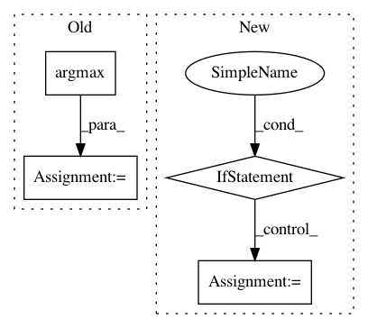

348fe606caf81291f9122e3d0cd68868009e181d,examples/cartpole.py,,,#,16
Before Change
agent.set_initial_state(observation=observation)
while True:
action = agent.get_action()
action_id = np.argmax(action)
next_observation, reward, is_terminal, info = \
env.step(action=action_id)
agent.perceive(next_observation=next_observation, action=action,
After Change
next_observation, reward, is_terminal, info = \
env.step(action=action_id)
if is_terminal:
reward = -20
agent.perceive(next_observation=next_observation,
action_id=action_id,
reward=reward, is_terminal=is_terminal)
In pattern: SUPERPATTERN
Frequency: 3
Non-data size: 4
Instances
Project Name: asyml/texar
Commit Name: 348fe606caf81291f9122e3d0cd68868009e181d
Time: 2018-01-03
Author: 695742297@qq.com
File Name: examples/cartpole.py
Class Name:
Method Name:
Project Name: chainer/chainercv
Commit Name: a7706fbde22887909db42f96a696437c084c05db
Time: 2017-05-31
Author: Hakuyume@users.noreply.github.com
File Name: chainercv/evaluations/eval_detection_voc.py
Class Name:
Method Name: eval_detection_voc
Project Name: autonomio/talos
Commit Name: c7519c70be11a967e708ee4095710300c19a2fd8
Time: 2018-08-21
Author: hugorosen@macbook-pro-de-hugo.home
File Name: talos/metrics/score_model.py
Class Name:
Method Name: get_score